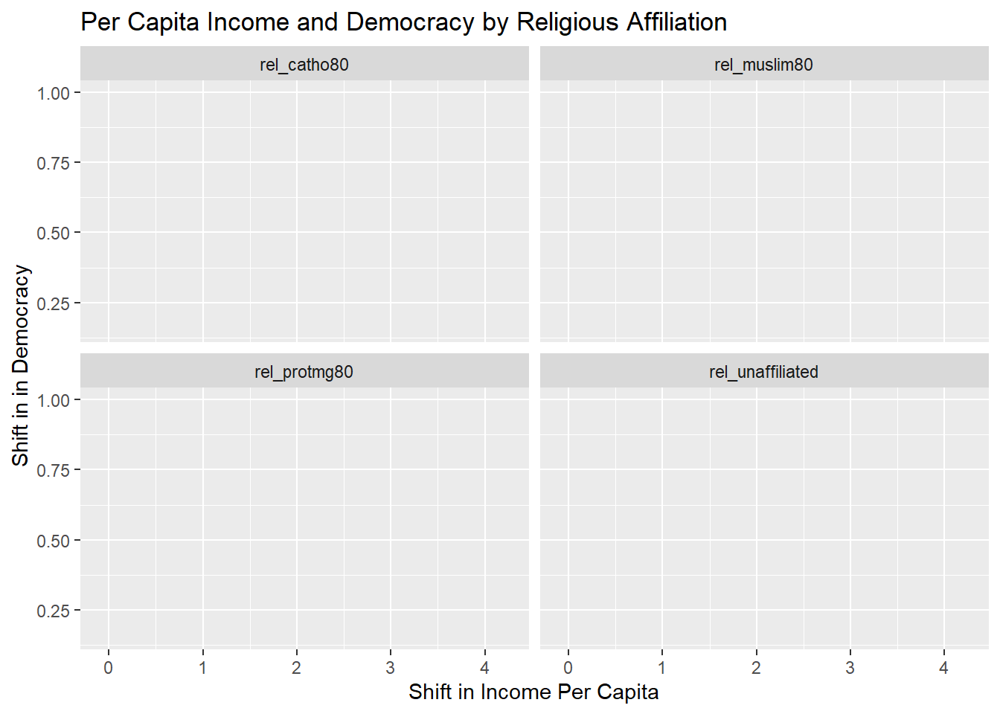
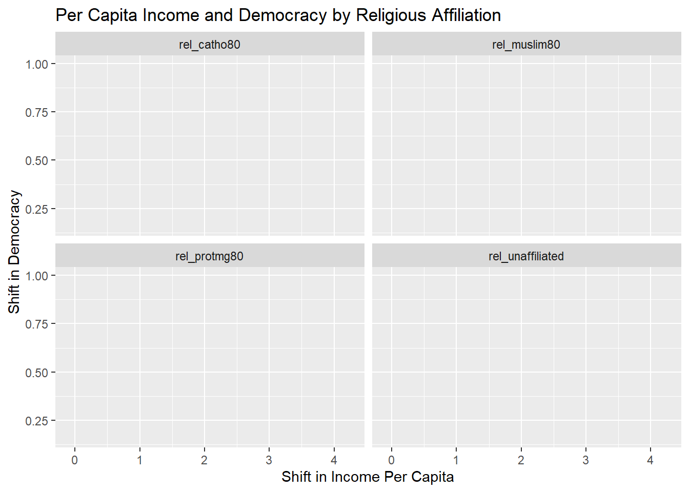
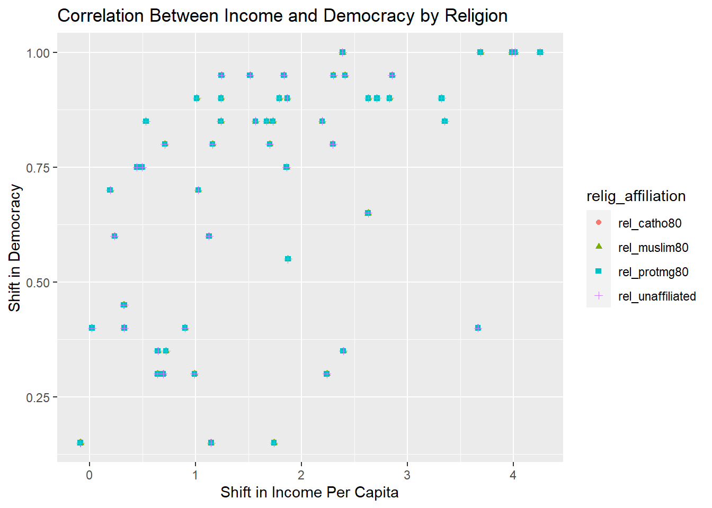
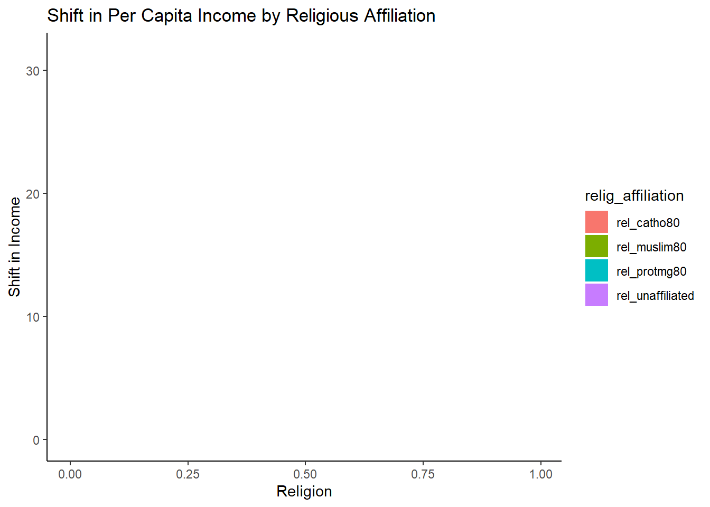
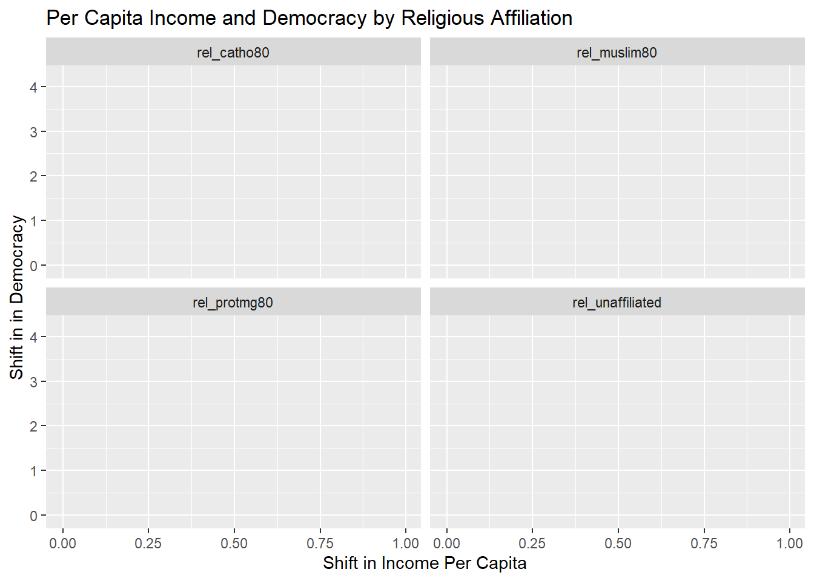
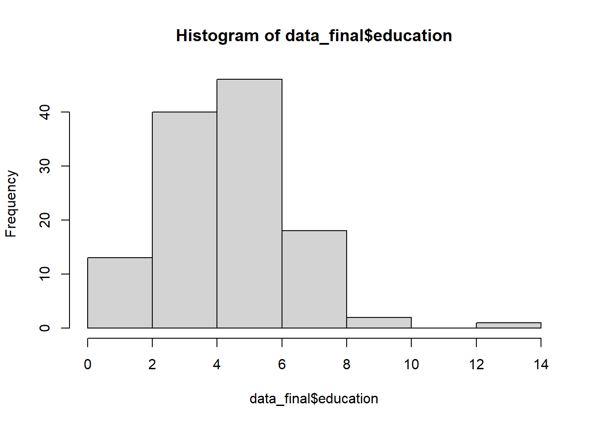
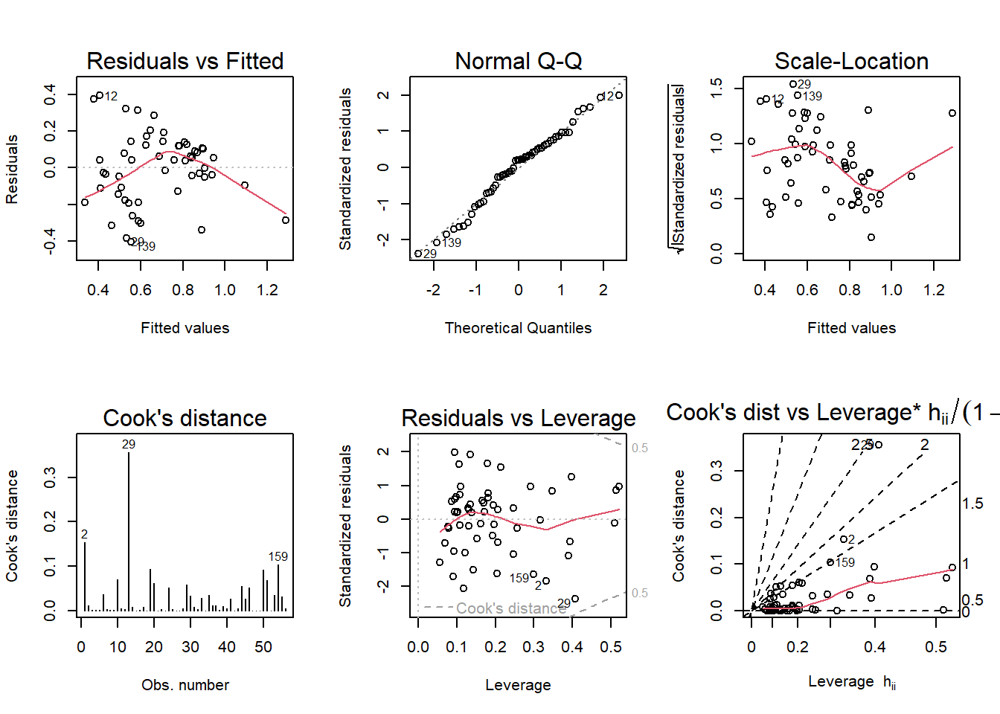

This project provides a high-level overview of the data set I will be using for my final project. The data set, titled ‘Income and Democracy,’ was published by the American Economic Consortium in 2008.
Author
Caitlin Rowley
Published
April 20, 2023
Background and Research Question:
My research question will focus on the cross-country correlation between income and democracy. A 2008 study titled “Income and Democracy,” published in the American Economic Review, argues that existing studies that establish a strong cross-country correlation between income and democracy do not control for factors that simultaneously affect both variables. Accordingly, this study, which focuses on changes in democracy over the past 500 years, controls for certain country-fixed effects—such as date of independence, constraints on the executive, and religious affiliation—thereby voiding any causal relationship between income per capita and various measures of democracy. This study is the source for my data set.
The authors of “Income and Democracy” included a wide range of variables in their study; specifically, they tested the significance of constraint on the executive; year of independence; settler mortality; population density; Catholic population; Muslim population; Protestant population; shift in per capita income; and shift in democracy. As noted, the authors asserted that after controlling for all the aforementioned country-fixed effects, there is no evidence of a causal relationship between income and democracy over time. Interestingly, the study also indicated that education was determined to be statistically insignificant as an independent, country-fixed effect on the correlation between income and democracy, and it was thus excluded from the study.
In contrast to “Income and Democracy,” a 1999 study titled “Determinants of Democracy,” authored by Robert J. Barro, indicates that additional improvements to the standard of living do, in fact, predict an increase in democracy. Barro suggests not only that education is an indicator of the correlation between income democracy, but that the pervasiveness of select religious affiliations is, as well. Specifically, Barro claimed that the negative effects from Muslim and non‐religious affiliations remain statistically significant in this association regardless of external control factors.
This incongruity led me to wonder whether we would see a causal relationship between income and democracy if the economic variables used in the two studies were more aligned. Specifically, I would like to examine how this change would affect both studies’ claims on the role of religious affiliation; in other words, will adding explanatory variables related to religious affiliation—specifically, non-religious affiliation—cause a shift in the lack of correlation between income and democracy? Additionally, given “Income and Democracy’s” declaration on the statistical insignificance of education as a country-fixed effect, I am also interested in seeing whether adding an interaction term—specifically, government expenditure on education—will have an effect on this relationship.
Research question: How will adding non-religious affiliation as an additional control variable and education as an interaction term impact the lack of causal relationship between income and democracy?
Hypothesis:
After reviewing “Income and Democracy,” it does not appear that non-religious affiliation was integrated into the report. Further, as the authors noted its lack of statistical significance related to its causal effect on the relationship between income democracy, neither is education. However, I am curious about how the inclusion of these two variables would affect Barro’s conclusion relative to the correlation between religious affiliation and democracy. As such, by adding these variables, I will be revisiting a previously-tested hypothesis.
I hypothesize that adding non-religious affiliation and education as additional control variables, and education*shift in per capita income as an interaction term will lead to increased statistical significance between income and democracy.
Descriptive Statistics:
Data for this study was collected from the Freedom House Political Rights Index, the Polity Composite Democracy Index, and data from other studies conducted by Barro and Kenneth A. Bollen.
Variables I will be focusing on include:
Country;
Constraint on the executive;
Year of independence;
Settler mortality;
Population density;
Catholic population;
Muslim population;
Protestant population;
Religiously-unaffiliated population;
Education funding;
Shift in per capita income; and
Shift in democracy.
Code
# load libraries:library(tidyverse)
Warning: package 'tidyverse' was built under R version 4.2.2
Warning: package 'readxl' was built under R version 4.2.2
Code
library(dplyr)
Code
# read in data file:data_file <-read_excel("C:/Users/caitr/OneDrive/Documents/DACSS/DACSS 603/603_Spring_2023/posts/_data/Income-Democracy.xls", sheet ="500 Year Panel")head(data_file)
# A tibble: 6 × 15
code country consf…¹ indcent indyear logem4 lpd15…² madid rel_c…³ rel_m…⁴
<chr> <chr> <dbl> <dbl> <dbl> <dbl> <dbl> <dbl> <dbl> <dbl>
1 ADO Andorra NA 18 1800 NA NA 1001 NA NA
2 AFG Afghanistan 0 19.2 1919 4.54 2.12 3002 0 0.993
3 AGO Angola 0.333 19.8 1975 5.63 0.405 2011 0.687 0
4 ALB Albania 0.667 19.1 1912 NA 1.99 2009 NA NA
5 ARE United Ara… 0.333 19.7 1971 NA 0 3002 0.004 0.949
6 ARG Argentina 0 18.2 1816 4.23 -2.21 5001 0.916 0.002
# … with 5 more variables: rel_protmg80 <dbl>, growth <dbl>, democ <dbl>,
# world <dbl>, colony <dbl>, and abbreviated variable names ¹consfirstaug,
# ²lpd1500s, ³rel_catho80, ⁴rel_muslim80
# remove blank observations (observations with some NAs are not removed):data_blank <- data_cln2[rowSums(is.na(data_cln2)) !=ncol(data_cln2), ]head(data_blank)
# A tibble: 6 × 10
country exec_…¹ year_…² log_s…³ log_p…⁴ rel_c…⁵ rel_m…⁶ rel_p…⁷ growth democ
<chr> <dbl> <dbl> <dbl> <dbl> <dbl> <dbl> <dbl> <dbl> <dbl>
1 Andorra NA 1800 NA NA NA NA NA 3.46 NA
2 Afghani… 0 1919 4.54 2.12 0 0.993 0 -0.0849 0.15
3 Angola 0.333 1975 5.63 0.405 0.687 0 0.198 0.644 0.35
4 Albania 0.667 1912 NA 1.99 NA NA NA 1.68 0.75
5 United … 0.333 1971 NA 0 0.004 0.949 0.003 3.37 0.1
6 Argenti… 0 1816 4.23 -2.21 0.916 0.002 0.027 2.71 0.9
# … with abbreviated variable names ¹exec_constraint, ²year_ind,
# ³log_settler_mort, ⁴log_pop_dens, ⁵rel_catho80, ⁶rel_muslim80,
# ⁷rel_protmg80
Code
# remove some NAs for description but not analysis:data_NA <- data_blank[rowSums(is.na(data_cln2)) ==0, ]dim(data_NA)
[1] 76 10
Code
# confirm data frame size of clean data set:dim(data_cln2)
[1] 173 10
We can see that this data set has 10 variables and 173 observations (though there will be 12 variables once I collect and add data related to education and non-religious affiliation). There are no duplicate observations, nor are there any blank observations. However, in the case that we remove observations with any missing values, the data set would only have 76 observations. Nonetheless, because the study’s authors elected to utilize incomplete observations, I will do the same.
Code
# summary of data (remove categorical variables):library(summarytools)
Warning: package 'summarytools' was built under R version 4.2.2
Attaching package: 'summarytools'
The following object is masked from 'package:tibble':
view
exec_constraint year_ind log_settler_mort log_pop_dens
Min. :0.0000 Min. :1800 Min. :0.9361 Min. :-3.8309
1st Qu.:0.0000 1st Qu.:1830 1st Qu.:4.2327 1st Qu.: 0.1911
Median :0.3333 Median :1947 Median :4.5099 Median : 1.0986
Mean :0.3942 Mean :1912 Mean :4.6269 Mean : 1.1317
3rd Qu.:0.6667 3rd Qu.:1964 3rd Qu.:5.5978 3rd Qu.: 2.4407
Max. :1.0000 Max. :1984 Max. :7.9862 Max. : 5.6426
NA's :23 NA's :85 NA's :22
rel_catho80 rel_muslim80 rel_protmg80 growth
Min. :0.00000 Min. :0.000000 Min. :0.0000 Min. :-0.6421
1st Qu.:0.00875 1st Qu.:0.000075 1st Qu.:0.0020 1st Qu.: 1.1432
Median :0.12600 Median :0.014500 Median :0.0230 Median : 1.8700
Mean :0.31126 Mean :0.243986 Mean :0.1253 Mean : 1.9514
3rd Qu.:0.56575 3rd Qu.:0.385750 3rd Qu.:0.1805 3rd Qu.: 2.7023
Max. :0.97300 Max. :0.998000 Max. :0.9780 Max. : 4.2531
NA's :21 NA's :21 NA's :22 NA's :1
democ
Min. :0.0000
1st Qu.:0.3500
Median :0.8000
Mean :0.6556
3rd Qu.:0.9250
Max. :1.0000
NA's :38
We can see here a data frame containing summary statistics for the 9 variables with numeric data, as the categorical variable simply indicates the country name. These statistics will be more meaningful upon following the addition of data related to education and non-religious affiliation.
Data Merge:
Code
# import new religious affiliation variablesrelig_1 <-read_csv("C:/Users/caitr/OneDrive/Documents/DACSS/DACSS 603/603_Spring_2023/posts/_data/DACSS603_religious_aff.csv")
Rows: 1205 Columns: 11
── Column specification ────────────────────────────────────────────────────────
Delimiter: ","
chr (2): Region, Country
dbl (9): Year, Buddhists, Christians, Folk Religions, Hindus, Jews, Muslims,...
ℹ Use `spec()` to retrieve the full column specification for this data.
ℹ Specify the column types or set `show_col_types = FALSE` to quiet this message.
Code
head(relig_1)
# A tibble: 6 × 11
Year Region Country Buddh…¹ Chris…² Folk …³ Hindus Jews Muslims Other…⁴
<dbl> <chr> <chr> <dbl> <dbl> <dbl> <dbl> <dbl> <dbl> <dbl>
1 2010 World All Co… 7.1 31.4 5.9 15 1 23.2 1
2 2010 North Amer… All Co… 1.1 77.4 1 1 1.8 1 1
3 2010 Latin Amer… All Co… 1 90 1.7 1 1 1 1
4 2010 Europe All Co… 1 74.5 1 1 1 5.9 1
5 2010 Middle Eas… All Co… 1 3.7 1 1 1.6 93 1
6 2010 Sub-Sahara… All Co… 1 62.9 3.3 1 1 30.2 1
# … with 1 more variable: Unaffiliated <dbl>, and abbreviated variable names
# ¹Buddhists, ²Christians, ³`Folk Religions`, ⁴`Other Religions`
# use data from 2010 (comparable to base data set)relig_2010 <- relig_vars[!(relig_vars$Year=="2020"| relig_vars$Year=="2030"| relig_vars$Year=="2040"| relig_vars$Year=="2050"),]head(relig_2010)
Rows: 266 Columns: 66
── Column specification ────────────────────────────────────────────────────────
Delimiter: ","
chr (4): Country Name, Country Code, Indicator Name, Indicator Code
dbl (52): 1970, 1971, 1972, 1973, 1974, 1975, 1976, 1977, 1978, 1979, 1980, ...
lgl (10): 1960, 1961, 1962, 1963, 1964, 1965, 1966, 1967, 1968, 1969
ℹ Use `spec()` to retrieve the full column specification for this data.
ℹ Specify the column types or set `show_col_types = FALSE` to quiet this message.
Code
head(edu)
# A tibble: 6 × 66
Country Na…¹ Count…² Indic…³ Indic…⁴ `1960` `1961` `1962` `1963` `1964` `1965`
<chr> <chr> <chr> <chr> <lgl> <lgl> <lgl> <lgl> <lgl> <lgl>
1 Aruba ABW Govern… SE.XPD… NA NA NA NA NA NA
2 Africa East… AFE Govern… SE.XPD… NA NA NA NA NA NA
3 Afghanistan AFG Govern… SE.XPD… NA NA NA NA NA NA
4 Africa West… AFW Govern… SE.XPD… NA NA NA NA NA NA
5 Angola AGO Govern… SE.XPD… NA NA NA NA NA NA
6 Albania ALB Govern… SE.XPD… NA NA NA NA NA NA
# … with 56 more variables: `1966` <lgl>, `1967` <lgl>, `1968` <lgl>,
# `1969` <lgl>, `1970` <dbl>, `1971` <dbl>, `1972` <dbl>, `1973` <dbl>,
# `1974` <dbl>, `1975` <dbl>, `1976` <dbl>, `1977` <dbl>, `1978` <dbl>,
# `1979` <dbl>, `1980` <dbl>, `1981` <dbl>, `1982` <dbl>, `1983` <dbl>,
# `1984` <dbl>, `1985` <dbl>, `1986` <dbl>, `1987` <dbl>, `1988` <dbl>,
# `1989` <dbl>, `1990` <dbl>, `1991` <dbl>, `1992` <dbl>, `1993` <dbl>,
# `1994` <dbl>, `1995` <dbl>, `1996` <dbl>, `1997` <dbl>, `1998` <dbl>, …
# A tibble: 6 × 2
`Country Name` `2010`
<chr> <dbl>
1 Aruba 6.93
2 Africa Eastern and Southern 4.50
3 Afghanistan 3.48
4 Africa Western and Central 2.96
5 Angola 3.42
6 Albania 3.41
# A tibble: 6 × 15
country exec_…¹ year_…² log_s…³ log_p…⁴ rel_c…⁵ rel_m…⁶ rel_p…⁷ growth democ
<chr> <dbl> <dbl> <dbl> <dbl> <dbl> <dbl> <dbl> <dbl> <dbl>
1 Andorra NA 1800 NA NA NA NA NA 3.46 NA
2 Afghani… 0 1919 4.54 2.12 0 0.993 0 -0.0849 0.15
3 Angola 0.333 1975 5.63 0.405 0.687 0 0.198 0.644 0.35
4 Albania 0.667 1912 NA 1.99 NA NA NA 1.68 0.75
5 United … 0.333 1971 NA 0 0.004 0.949 0.003 3.37 0.1
6 Argenti… 0 1816 4.23 -2.21 0.916 0.002 0.027 2.71 0.9
# … with 5 more variables: rel_unaffiliated <dbl>, rel_jewish <dbl>,
# rel_hindu <dbl>, rel_bud <dbl>, education <dbl>, and abbreviated variable
# names ¹exec_constraint, ²year_ind, ³log_settler_mort, ⁴log_pop_dens,
# ⁵rel_catho80, ⁶rel_muslim80, ⁷rel_protmg80
Code
# summary of final data framesummary(data_final)
country exec_constraint year_ind log_settler_mort
Length:173 Min. :0.0000 Min. :1800 Min. :0.9361
Class :character 1st Qu.:0.0000 1st Qu.:1830 1st Qu.:4.2327
Mode :character Median :0.3333 Median :1947 Median :4.5099
Mean :0.3942 Mean :1912 Mean :4.6269
3rd Qu.:0.6667 3rd Qu.:1964 3rd Qu.:5.5978
Max. :1.0000 Max. :1984 Max. :7.9862
NA's :23 NA's :85
log_pop_dens rel_catho80 rel_muslim80 rel_protmg80
Min. :-3.8309 Min. :0.00000 Min. :0.000000 Min. :0.0000
1st Qu.: 0.1911 1st Qu.:0.00875 1st Qu.:0.000075 1st Qu.:0.0020
Median : 1.0986 Median :0.12600 Median :0.014500 Median :0.0230
Mean : 1.1317 Mean :0.31126 Mean :0.243986 Mean :0.1253
3rd Qu.: 2.4407 3rd Qu.:0.56575 3rd Qu.:0.385750 3rd Qu.:0.1805
Max. : 5.6426 Max. :0.97300 Max. :0.998000 Max. :0.9780
NA's :22 NA's :21 NA's :21 NA's :22
growth democ rel_unaffiliated rel_jewish
Min. :-0.6421 Min. :0.0000 Min. :0.01000 Min. :0.0100
1st Qu.: 1.1432 1st Qu.:0.3500 1st Qu.:0.01000 1st Qu.:0.0100
Median : 1.8700 Median :0.8000 Median :0.03300 Median :0.0100
Mean : 1.9514 Mean :0.6556 Mean :0.08615 Mean :0.0151
3rd Qu.: 2.7023 3rd Qu.:0.9250 3rd Qu.:0.10925 3rd Qu.:0.0100
Max. : 4.2531 Max. :1.0000 Max. :0.59600 Max. :0.7560
NA's :1 NA's :38 NA's :25 NA's :25
rel_hindu rel_bud education
Min. :0.01000 Min. :0.01000 Min. : 0.4664
1st Qu.:0.01000 1st Qu.:0.01000 1st Qu.: 3.1675
Median :0.01000 Median :0.01000 Median : 4.4872
Mean :0.03664 Mean :0.04701 Mean : 4.4160
3rd Qu.:0.01000 3rd Qu.:0.01000 3rd Qu.: 5.5250
Max. :0.80700 Max. :0.96900 Max. :12.8373
NA's :25 NA's :25 NA's :53
Visualization (NOTE: working on these):
Code
# pivot data to add variable with all religionsdata_pivot <- data_final %>%pivot_longer(cols=c('rel_catho80', 'rel_muslim80', 'rel_protmg80', 'rel_unaffiliated'),names_to='relig_affiliation',values_to='relig_pop')head(data_pivot)
# A tibble: 6 × 13
country exec_…¹ year_…² log_s…³ log_p…⁴ growth democ rel_j…⁵ rel_h…⁶ rel_bud
<chr> <dbl> <dbl> <dbl> <dbl> <dbl> <dbl> <dbl> <dbl> <dbl>
1 Andorra NA 1800 NA NA 3.46 NA 0.01 0.01 0.01
2 Andorra NA 1800 NA NA 3.46 NA 0.01 0.01 0.01
3 Andorra NA 1800 NA NA 3.46 NA 0.01 0.01 0.01
4 Andorra NA 1800 NA NA 3.46 NA 0.01 0.01 0.01
5 Afghani… 0 1919 4.54 2.12 -0.0849 0.15 0.01 0.01 0.01
6 Afghani… 0 1919 4.54 2.12 -0.0849 0.15 0.01 0.01 0.01
# … with 3 more variables: education <dbl>, relig_affiliation <chr>,
# relig_pop <dbl>, and abbreviated variable names ¹exec_constraint,
# ²year_ind, ³log_settler_mort, ⁴log_pop_dens, ⁵rel_jewish, ⁶rel_hindu
Warning in mean.default(sort(x, partial = half + 0L:1L)[half + 0L:1L]): argument
is not numeric or logical: returning NA
Warning in mean.default(sort(x, partial = half + 0L:1L)[half + 0L:1L]): argument
is not numeric or logical: returning NA
Warning in mean.default(sort(x, partial = half + 0L:1L)[half + 0L:1L]): argument
is not numeric or logical: returning NA
Warning in mean.default(sort(x, partial = half + 0L:1L)[half + 0L:1L]): argument
is not numeric or logical: returning NA
Warning in mean.default(sort(x, partial = half + 0L:1L)[half + 0L:1L]): argument
is not numeric or logical: returning NA
growth democ education relig_affiliation
NA NA NA NA
relig_pop
NA
# scatterplot for income x democray by religion (maybe try map?)relig_vis1 <- median%>%ggplot(aes(growth, democ))+facet_wrap("relig_affiliation")+labs(x="Shift in Income Per Capita",y="Shift in in Democracy", title ="Per Capita Income and Democracy by Religious Affiliation")print(relig_vis1)

Code
# plots are blank# try without mediansrelig_vis3 <- data_pivot%>%na.omit(data_pivot)%>%ggplot(aes(growth, democ))+facet_wrap("relig_affiliation")+labs(x="Shift in Income Per Capita",y="Shift in Democracy", title ="Per Capita Income and Democracy by Religious Affiliation")print(relig_vis3)

Code
# plots are still blank
Code
# scaterplot by median pop percentages by religiondem_inc_relig <- median%>%ggplot(aes(growth, democ))+geom_point(aes(color=relig_affiliation, shape=relig_affiliation))+labs(x="Shift in Income Per Capita", y="Shift in Democracy", title ="Correlation Between Income and Democracy by Religion")print(dem_inc_relig)

Code
# why are all shapes overlapping?
Code
# median pop percentages by religionmed_cath <-median(data_final$rel_catho80)med_prot <-median(data_final$rel_protmg80)med_muslim <-median(data_final$rel_muslim80)med_unaff <-median(data_final$rel_unaffiliated)med_religions <-c(med_cath, med_prot, med_muslim, med_unaff)# try bar chartinc_relig <- median%>%ggplot(aes(x=relig_pop, y=growth, fill=relig_affiliation)) +geom_bar(stat="identity") +scale_fill_hue() +theme_classic() +labs(x="Religion", y="Shift in Income", title="Shift in Per Capita Income by Religious Affiliation")print(inc_relig)

Code
# error: continuous values supplied to discrete scale
Code
# scatterplot relig_income2 <- median%>%ggplot(aes(relig_pop, growth))+facet_wrap("relig_affiliation")+labs(x="Shift in Income Per Capita",y="Shift in in Democracy", title ="Per Capita Income and Democracy by Religious Affiliation")print(relig_income2)

Code
# blank
Analysis:
Hypothesis Testing:
Define variables:
Response (dependent) variable: Shift in democracy over time (“democ”).
Explanatory (independent) variable: Shift in per capita income over time (“growth”).
Control variables: country (“country”); constraint on the executive at the time of independence (“exec_constraint”); year of independence (“year_ind”); settler mortality rate (“log_settler_mort”); population density (“log_pop_dens”); Catholic population (“rel_catho80”); Muslim population (“rel_muslim80”); Protestant population (“rel_protmg80”); religiously-unaffiliated population (“rel_unaffiliated”); and education funding (“education”).
Interaction terms: Education funding (“education”)*shift in per capita income (“growth”).
I specifically added religiously-unaffiliated population (by percentage of population by country) and education funding (by expenditure as a percentage of GDP by country) as additional control variables because of the role they played in Barro’s 1999 study. Although Barro did not control for the same country-specific effects as the authors of “Income and Democracy,” he nonetheless suggested that both education and religious affiliation are statistically significant indicators of the correlation between income and democracy. So, I elected to add religiously-unaffiliated population to my replication data set because it was included in Barro’s study but excluded from “Income and Democracy.” Additionally, even though education was deemed to be statistically insignificant in “Income and Democracy,” I thought it would be interesting to see if adding religiously-unaffiliated population would affect the role of education a country-fixed effect.
Moreover, as I initially speculated that education would be statistically significant prior to reviewing “Income and Democracy,” I was curious to see if adding education funding*shift as an interaction term would perhaps provide additional insight on the reach of education as a country-fixed effect.
(TO-DO) T-Tests
Code
# transform education from continuous to ordinal (quartiles based on range)range_edu <-range(data_final$education, na.rm=TRUE)# ID quantilesquantile_edu <-quantile(range_edu)quantile_edu
# A tibble: 6 × 16
country exec_…¹ year_…² log_s…³ log_p…⁴ rel_c…⁵ rel_m…⁶ rel_p…⁷ growth democ
<chr> <dbl> <dbl> <dbl> <dbl> <dbl> <dbl> <dbl> <dbl> <dbl>
1 Andorra NA 1800 NA NA NA NA NA 3.46 NA
2 Afghani… 0 1919 4.54 2.12 0 0.993 0 -0.0849 0.15
3 Angola 0.333 1975 5.63 0.405 0.687 0 0.198 0.644 0.35
4 Albania 0.667 1912 NA 1.99 NA NA NA 1.68 0.75
5 United … 0.333 1971 NA 0 0.004 0.949 0.003 3.37 0.1
6 Argenti… 0 1816 4.23 -2.21 0.916 0.002 0.027 2.71 0.9
# … with 6 more variables: rel_unaffiliated <dbl>, rel_jewish <dbl>,
# rel_hindu <dbl>, rel_bud <dbl>, education <dbl>, edu_quant <fct>, and
# abbreviated variable names ¹exec_constraint, ²year_ind, ³log_settler_mort,
# ⁴log_pop_dens, ⁵rel_catho80, ⁶rel_muslim80, ⁷rel_protmg80
Code
# transform religiously-unaffiliated population into categorical variable based on the highest religious population for each countrydata_final$rel_max <-pmax(data_final$rel_catho80,data_final$rel_muslim80, data_final$rel_protmg80, data_final$rel_unaffiliated)head(data_final)
# A tibble: 6 × 16
country exec_…¹ year_…² log_s…³ log_p…⁴ rel_c…⁵ rel_m…⁶ rel_p…⁷ growth democ
<chr> <dbl> <dbl> <dbl> <dbl> <dbl> <dbl> <dbl> <dbl> <dbl>
1 Andorra NA 1800 NA NA NA NA NA 3.46 NA
2 Afghani… 0 1919 4.54 2.12 0 0.993 0 -0.0849 0.15
3 Angola 0.333 1975 5.63 0.405 0.687 0 0.198 0.644 0.35
4 Albania 0.667 1912 NA 1.99 NA NA NA 1.68 0.75
5 United … 0.333 1971 NA 0 0.004 0.949 0.003 3.37 0.1
6 Argenti… 0 1816 4.23 -2.21 0.916 0.002 0.027 2.71 0.9
# … with 6 more variables: rel_unaffiliated <dbl>, rel_jewish <dbl>,
# rel_hindu <dbl>, rel_bud <dbl>, education <dbl>, rel_max <dbl>, and
# abbreviated variable names ¹exec_constraint, ²year_ind, ³log_settler_mort,
# ⁴log_pop_dens, ⁵rel_catho80, ⁶rel_muslim80, ⁷rel_protmg80
Code
# replace NAs with blanks# mutate - having trouble replacing values in rel_max column with the column name they were pulled from
Code
# TO DO: transform religions to categorical by selecting majority religion for each country# then we can generate visuals and run t-test/ANOVA for both education funding and religion
Correlation Tests
Code
# remove observations with all NAssans_NA <- data_final[rowSums(is.na(data_final)) !=ncol(data_final), ]head(sans_NA)
# A tibble: 6 × 16
country exec_…¹ year_…² log_s…³ log_p…⁴ rel_c…⁵ rel_m…⁶ rel_p…⁷ growth democ
<chr> <dbl> <dbl> <dbl> <dbl> <dbl> <dbl> <dbl> <dbl> <dbl>
1 Andorra NA 1800 NA NA NA NA NA 3.46 NA
2 Afghani… 0 1919 4.54 2.12 0 0.993 0 -0.0849 0.15
3 Angola 0.333 1975 5.63 0.405 0.687 0 0.198 0.644 0.35
4 Albania 0.667 1912 NA 1.99 NA NA NA 1.68 0.75
5 United … 0.333 1971 NA 0 0.004 0.949 0.003 3.37 0.1
6 Argenti… 0 1816 4.23 -2.21 0.916 0.002 0.027 2.71 0.9
# … with 6 more variables: rel_unaffiliated <dbl>, rel_jewish <dbl>,
# rel_hindu <dbl>, rel_bud <dbl>, education <dbl>, rel_max <dbl>, and
# abbreviated variable names ¹exec_constraint, ²year_ind, ³log_settler_mort,
# ⁴log_pop_dens, ⁵rel_catho80, ⁶rel_muslim80, ⁷rel_protmg80
Code
# correlation between income growth and educationcor(sans_NA[c("growth", "education")])
growth education
growth 1 NA
education NA 1
There is no correlation between shift in per capita income and education funding.
Code
# covariance between democracy and religious unaffiliationcov(sans_NA[c("democ", "rel_unaffiliated")])
democ rel_unaffiliated
democ NA NA
rel_unaffiliated NA NA
There is no covariance between shift in democracy and religiously-unaffiliated population.
Code
# covariance between democracy and educationcov(sans_NA[c("democ", "education")])
democ education
democ NA NA
education NA NA
There is no covariance between shift in democracy and education funding.
Multiple regression models:
First, I will check to see if either of my added control variables need to be logged.
Education
Code
# educationhist(data_final$education)

This distribution is moderately right-skewed, so I will log the education variable.
Interestingly, we see in the original model that the relationship between shift in per capita income (“growth”) and shift in democracy is statistically significant at the 0.05 significance level (p-value=0.01). It is important to note that while the authors of “Income and Democracy” did conclude that there is no causal relationship between per capita shift in income and shift in democracy, this is not to say that there is no level of statistical significance. I will next add my additional control variables and interaction term to see if these terms cause an increase in statistical significance.
Original model plus two control variables:
Code
# multiple regression model with all variablesreg_2 <-lm(democ ~ growth + exec_constraint + year_ind + log_settler_mort + log_pop_dens + rel_catho80 + rel_muslim80 + rel_protmg80 + log_rel_unaff + log_education, data = data_final)summary(reg_2)
We can see based on this multiple regression model that, when controlling for shift in per capita income, constraint on the executive at the time of independence, year of independence, (log) settler mortality rate, (log) population density, Catholic population, Muslim population, Protestant population, religiously-unaffiliated population, and education funding, there is no statistical significance between shift in per capita income (growth) and shift in democracy (democ) when the significance level is 0.05.
We can, however, see that year of independence (p-value=0.001) and constraint on the executive (p-value=0.02) are statistically significant on shift in democracy. Even more interesting is that religiously-unaffiliated population, a control variable that was added to this replication study, is also statistically significant in terms of its relationship with shift in democracy (p-value = 0.02).
Original model plus two control variables and an interaction term:
In reviewing the third regression model which incorporates education*growth as an interaction term, we do see some minor shifts in p-values, but no shift is large enough to affect statistical significance. So, we can again confirm that, even when adding an interaction term, shift in per capita income is not statistically significant in terms of its relationship with shift in democracy.
I will now combine these three models into a single, more legible table using the ‘stargazer()’ function. We can again see that shift in income per capita is only statistically significant (though not indicative of a causal relationship) in the first model, which does not include the additional control variables or the interaction term.
Code
# use stargazer to create combined tablelibrary(stargazer)
Please cite as:
Hlavac, Marek (2022). stargazer: Well-Formatted Regression and Summary Statistics Tables.
R package version 5.2.3. https://CRAN.R-project.org/package=stargazer
Results of hypothesis test: We can see based on these regression models that education funding, religiously-unaffiliated population, and education funding*shift in per capita income actually lead to decreased statistical significance between shift in income per capita and shift in democracy. Thus, these terms do change the causal relationship between shift in per capita income and shift in democracy.
We can see in the stargazer table above that “reg_2,” or the regression model that includes the additional control variables but not the interaction term, has the highest adjusted R-squared value , which is an indicator of best fit as it is indicative of the model with the smallest residuals.
PRESS
Code
# PRESSlibrary(MPV)
Warning: package 'MPV' was built under R version 4.2.3
Loading required package: lattice
Loading required package: KernSmooth
KernSmooth 2.23 loaded
Copyright M. P. Wand 1997-2009
Loading required package: randomForest
Warning: package 'randomForest' was built under R version 4.2.2
randomForest 4.7-1.1
Type rfNews() to see new features/changes/bug fixes.
Attaching package: 'randomForest'
The following object is masked from 'package:dplyr':
combine
The following object is masked from 'package:ggplot2':
margin
Code
#reg_1 = 4.999083PRESS(reg_1)
[1] 4.999083
Code
#reg_2 = 3.258505PRESS(reg_2)
[1] 3.258505
Code
#reg_3 = 3.460336PRESS(reg_3)
[1] 3.460336
We can see in the above Predicted Residual Sum of Squares (PRESS) tests that “reg_2,” or the regression model that includes the additional control variables but not the interaction term, has the lowest PRESS value, thus indicating that it is the best-fit model.
AIC
Code
# AIClibrary(AICcmodavg)
Warning: package 'AICcmodavg' was built under R version 4.2.3
Attaching package: 'AICcmodavg'
The following object is masked from 'package:randomForest':
importance
Model selection based on AICc:
K AICc Delta_AICc AICcWt Cum.Wt LL
reg_2 12 2.40 0.00 0.84 0.84 14.43
reg_3 13 5.80 3.40 0.15 0.99 14.44
reg_1 10 11.34 8.94 0.01 1.00 6.02
We can see that based on the Akaike Information Criterion (AIC) test, “reg_2,” or the regression model that includes the additional control variables but not the interaction term, has the lowest AICc value. Therefore, because minimizing the AICc value equates to minimizing the number of unnecessary model parameters, “reg_2” is the best fit.
Diagnostics:
Based on the Adjusted R-Squared, PRESS, and AIC tests, “reg_2,” or the regression model that includes the additional control variables but not the interaction term, is universally considered the model of best fit.
Diagnostic plots for the final model (reg_2):
Code
# plots for reg_2par(mfrow=c(2,3))plot(reg_2, which=1:6)

Residuals vs. Fitted: In applying the Residuals vs. Fitted plot, we can observe a violation due to the curvature of the red line. We also see that the distribution of data points does not “bounce randomly” about the 0 line. This plot is therefore a bad fit for this regression model.
Normal Q-Q: In applying the Normal Q-Q plot, we observe that the data points do generally fall along the 0 line, which is indicative of a good fit for this regression model.
Scale-Location: In applying the Scale-Location plot, we observe heteroscedasticity across the data points as well as a non-horizontal red line. Thus, we observe a violation of this plot due to the increase and decrease in the trend line. This plot is therefore a bad fit for this regression model.
Cook’s Distance: In applying the Cook’s Distance plot, we observe a violation due to several data points yielding a Cook’s distance value greater than 1. This plot is therefore a bad fit for this regression model.
Residuals vs. Leverage: In applying the Residuals vs. Leverage plot, we can see that there are no data points outside of the dashed lines marked with ‘0.5.’ This plot is therefore a good fit for this regression model.
Cook’s Distance vs. Leverage: In applying the Cook’s Distance vs. Leverage plot, we do not really observe any influential data points. This plot does not contribute any value to this regression model.
Sources:
URL for data: https://www.openicpsr.org/openicpsr/project/113251/version/V1/view?path=/openicpsr/113251/fcr:versions/V1/Income-and-Democracy-Data-AER-adjustment.xls&type=file
URL for study: http://homepage.ntu.edu.tw/~kslin/macro2009/Acemoglu%20et%20al%202008.pdf
URL for external references: https://www.jstor.org/stable/10.1086/250107
URL for additional religious affiliation variables: https://datahub.io/sagargg/world-religion-projections#data
URL for education variable: https://data.worldbank.org/indicator/SE.XPD.TOTL.GD.ZS
Source Code
---title: "Final Project - Check-In 2"author: "Caitlin Rowley"description: "This project provides a high-level overview of the data set I will be using for my final project. The data set, titled 'Income and Democracy,' was published by the American Economic Consortium in 2008."date: "04/20/2023"format: html: toc: true code-fold: true code-copy: true code-tools: truecategories: - finalpart2---### Background and Research Question:My research question will focus on the cross-country correlation between income and democracy. A 2008 study titled "Income and Democracy," published in the American Economic Review, argues that existing studies that establish a strong cross-country correlation between income and democracy do not control for factors that simultaneously affect both variables. Accordingly, this study, which focuses on changes in democracy over the past 500 years, controls for certain country-fixed effects---such as date of independence, constraints on the executive, and religious affiliation---thereby voiding any causal relationship between income per capita and various measures of democracy. This study is the source for my data set.The authors of "Income and Democracy" included a wide range of variables in their study; specifically, they tested the significance of constraint on the executive; year of independence; settler mortality; population density; Catholic population; Muslim population; Protestant population; shift in per capita income; and shift in democracy. As noted, the authors asserted that after controlling for all the aforementioned country-fixed effects, there is no evidence of a causal relationship between income and democracy over time. Interestingly, the study also indicated that education was determined to be statistically insignificant as an independent, country-fixed effect on the correlation between income and democracy, and it was thus excluded from the study.In contrast to "Income and Democracy," a 1999 study titled "Determinants of Democracy," authored by Robert J. Barro, indicates that additional improvements to the standard of living do, in fact, predict an increase in democracy. Barro suggests not only that education is an indicator of the correlation between income democracy, but that the pervasiveness of select religious affiliations is, as well. Specifically, Barro claimed that the negative effects from Muslim and non‐religious affiliations remain statistically significant in this association regardless of external control factors.This incongruity led me to wonder whether we would see a causal relationship between income and democracy if the economic variables used in the two studies were more aligned. Specifically, I would like to examine how this change would affect both studies' claims on the role of religious affiliation; in other words, will adding explanatory variables related to religious affiliation---specifically, non-religious affiliation---cause a shift in the lack of correlation between income and democracy? Additionally, given "Income and Democracy's" declaration on the statistical insignificance of education as a country-fixed effect, I am also interested in seeing whether adding an interaction term---specifically, government expenditure on education---will have an effect on this relationship.**Research question**: How will adding non-religious affiliation as an additional control variable and education as an interaction term impact the lack of causal relationship between income and democracy?### Hypothesis:After reviewing "Income and Democracy," it does not appear that non-religious affiliation was integrated into the report. Further, as the authors noted its lack of statistical significance related to its causal effect on the relationship between income democracy, neither is education. However, I am curious about how the inclusion of these two variables would affect Barro's conclusion relative to the correlation between religious affiliation and democracy. As such, by adding these variables, I will be revisiting a previously-tested hypothesis.I hypothesize that adding non-religious affiliation and education as additional control variables, and education\*shift in per capita income as an interaction term will lead to increased statistical significance between income and democracy.### Descriptive Statistics:Data for this study was collected from the Freedom House Political Rights Index, the Polity Composite Democracy Index, and data from other studies conducted by Barro and Kenneth A. Bollen.Variables I will be focusing on include:- Country;- Constraint on the executive;- Year of independence;- Settler mortality;- Population density;- Catholic population;- Muslim population;- Protestant population;- Religiously-unaffiliated population;- Education funding;- Shift in per capita income; and- Shift in democracy.```{r}# load libraries:library(tidyverse)library(readxl)library(dplyr)``````{r}# read in data file:data_file <-read_excel("C:/Users/caitr/OneDrive/Documents/DACSS/DACSS 603/603_Spring_2023/posts/_data/Income-Democracy.xls", sheet ="500 Year Panel")head(data_file)``````{r}# remove dummy/unnecessary variables (as identified in study's variable key):data_cln =subset(data_file, select =-c(code, world, colony, indcent, madid))head(data_cln)# rename variablesdata_cln2 <- data_cln %>%rename("exec_constraint"="consfirstaug", "year_ind"="indyear", "log_settler_mort"="logem4", "log_pop_dens"="lpd1500s")head(data_cln2)``````{r}# remove duplicates:duplicates <-duplicated(data_cln2)duplicates["TRUE"]# remove blank observations (observations with some NAs are not removed):data_blank <- data_cln2[rowSums(is.na(data_cln2)) !=ncol(data_cln2), ]head(data_blank)``````{r}# remove some NAs for description but not analysis:data_NA <- data_blank[rowSums(is.na(data_cln2)) ==0, ]dim(data_NA)``````{r}# confirm data frame size of clean data set:dim(data_cln2)```We can see that this data set has 10 variables and 173 observations (though there will be 12 variables once I collect and add data related to education and non-religious affiliation). There are no duplicate observations, nor are there any blank observations. However, in the case that we remove observations with any missing values, the data set would only have 76 observations. Nonetheless, because the study's authors elected to utilize incomplete observations, I will do the same.```{r}# summary of data (remove categorical variables):library(summarytools)summary <-subset(data_cln2, select =-c(country))summary(summary)```We can see here a data frame containing summary statistics for the 9 variables with numeric data, as the categorical variable simply indicates the country name. These statistics will be more meaningful upon following the addition of data related to education and non-religious affiliation.### Data Merge:```{r}# import new religious affiliation variablesrelig_1 <-read_csv("C:/Users/caitr/OneDrive/Documents/DACSS/DACSS 603/603_Spring_2023/posts/_data/DACSS603_religious_aff.csv")head(relig_1)# convert percentages to decimalsrelig_dec <-transform(relig_1, rel_unaffiliated = (Unaffiliated/100), rel_jewish = (Jews/100), rel_hindu = (Hindus/100), rel_bud = (Buddhists/100))head(relig_dec)# remove "all countries" from 'country' variablerelig_country <- relig_dec[!(relig_dec$Country=="All Countries"),]head(relig_country)# remove unneeded columnsrelig_vars <-subset(relig_country, select =-c(Region, Buddhists, Christians, Folk.Religions, Hindus, Jews, Muslims, Other.Religions, Unaffiliated))head(relig_vars)# use data from 2010 (comparable to base data set)relig_2010 <- relig_vars[!(relig_vars$Year=="2020"| relig_vars$Year=="2030"| relig_vars$Year=="2040"| relig_vars$Year=="2050"),]head(relig_2010)# remove duplicatesrel_duplicates <-duplicated(relig_2010)rel_duplicates["TRUE"]# remove "year" columnrelig_cln <-subset(relig_2010, select =-c(Year))head(relig_cln)# merge with data_filedata_combined <-left_join(data_cln2, relig_cln,by =c("country"="Country"))head(data_combined)``````{r}# merge additional control: education expenditure (GDP)edu <-read_csv("C:/Users/caitr/OneDrive/Documents/DACSS/DACSS 603/603_Spring_2023/posts/_data/DACSS603_edu_expend.csv")head(edu)# remove unneeded columnsedu_vars <-subset(edu, select =c("Country Name", "2010"))head(edu_vars)# remove duplicatesedu_duplicates <-duplicated(edu_vars)edu_duplicates["TRUE"]# merge with combined datadata_merge <-left_join(data_combined, edu_vars,by =c("country"="Country Name"))data_final <-rename(data_merge, "education"="2010")head(data_final)``````{r}# summary of final data framesummary(data_final)```### Visualization (NOTE: working on these):```{r}# pivot data to add variable with all religionsdata_pivot <- data_final %>%pivot_longer(cols=c('rel_catho80', 'rel_muslim80', 'rel_protmg80', 'rel_unaffiliated'),names_to='relig_affiliation',values_to='relig_pop')head(data_pivot)# remove NAsmedian <- data_pivot%>%na.omit(data_pivot)%>%select(c(growth, democ, education, relig_affiliation, relig_pop))apply(median,2,median)head(median)# scatterplot for income x democray by religion (maybe try map?)relig_vis1 <- median%>%ggplot(aes(growth, democ))+facet_wrap("relig_affiliation")+labs(x="Shift in Income Per Capita",y="Shift in in Democracy", title ="Per Capita Income and Democracy by Religious Affiliation")print(relig_vis1)# plots are blank# try without mediansrelig_vis3 <- data_pivot%>%na.omit(data_pivot)%>%ggplot(aes(growth, democ))+facet_wrap("relig_affiliation")+labs(x="Shift in Income Per Capita",y="Shift in Democracy", title ="Per Capita Income and Democracy by Religious Affiliation")print(relig_vis3)# plots are still blank``````{r}# scaterplot by median pop percentages by religiondem_inc_relig <- median%>%ggplot(aes(growth, democ))+geom_point(aes(color=relig_affiliation, shape=relig_affiliation))+labs(x="Shift in Income Per Capita", y="Shift in Democracy", title ="Correlation Between Income and Democracy by Religion")print(dem_inc_relig)# why are all shapes overlapping?``````{r}# median pop percentages by religionmed_cath <-median(data_final$rel_catho80)med_prot <-median(data_final$rel_protmg80)med_muslim <-median(data_final$rel_muslim80)med_unaff <-median(data_final$rel_unaffiliated)med_religions <-c(med_cath, med_prot, med_muslim, med_unaff)# try bar chartinc_relig <- median%>%ggplot(aes(x=relig_pop, y=growth, fill=relig_affiliation)) +geom_bar(stat="identity") +scale_fill_hue() +theme_classic() +labs(x="Religion", y="Shift in Income", title="Shift in Per Capita Income by Religious Affiliation")print(inc_relig)# error: continuous values supplied to discrete scale``````{r}# scatterplot relig_income2 <- median%>%ggplot(aes(relig_pop, growth))+facet_wrap("relig_affiliation")+labs(x="Shift in Income Per Capita",y="Shift in in Democracy", title ="Per Capita Income and Democracy by Religious Affiliation")print(relig_income2)# blank```### Analysis:#### Hypothesis Testing:Define variables:1. **Response (dependent) variable**: Shift in democracy over time ("democ").2. **Explanatory (independent) variable**: Shift in per capita income over time ("growth").3. **Control variables**: country ("country"); constraint on the executive at the time of independence ("exec_constraint"); year of independence ("year_ind"); settler mortality rate ("log_settler_mort"); population density ("log_pop_dens"); Catholic population ("rel_catho80"); Muslim population ("rel_muslim80"); Protestant population ("rel_protmg80"); **religiously-unaffiliated population ("rel_unaffiliated")**; and **education funding ("education")**.4. **Interaction terms**: Education funding ("education")\*shift in per capita income ("growth").I specifically added religiously-unaffiliated population (by percentage of population by country) and education funding (by expenditure as a percentage of GDP by country) as additional control variables because of the role they played in Barro's 1999 study. Although Barro did not control for the same country-specific effects as the authors of "Income and Democracy," he nonetheless suggested that both education and religious affiliation are statistically significant indicators of the correlation between income and democracy. So, I elected to add religiously-unaffiliated population to my replication data set because it was included in Barro's study but excluded from "Income and Democracy." Additionally, even though education was deemed to be statistically insignificant in "Income and Democracy," I thought it would be interesting to see if adding religiously-unaffiliated population would affect the role of education a country-fixed effect.Moreover, as I initially speculated that education would be statistically significant prior to reviewing "Income and Democracy," I was curious to see if adding education funding\*shift as an interaction term would perhaps provide additional insight on the reach of education as a country-fixed effect.**(TO-DO) T-Tests**```{r}# transform education from continuous to ordinal (quartiles based on range)range_edu <-range(data_final$education, na.rm=TRUE)# ID quantilesquantile_edu <-quantile(range_edu)quantile_edulibrary(gtools)# add column for quantilesedu_quant <-quantcut(data_final$education, q =4, na.rm =TRUE, names=TRUE)data_final_edu <-mutate(data_final, edu_quant=edu_quant)# rename quantilesdata_final_edu <- data_final_edu %>%mutate(edu_quant=recode(edu_quant, '[0.466,3.17]'='quant_1', '(3.17,4.49]'='quant_2', '(4.49,5.53]'='quant_3', '(5.53,12.8]'='quant_4'))head(data_final_edu)``````{r}# transform religiously-unaffiliated population into categorical variable based on the highest religious population for each countrydata_final$rel_max <-pmax(data_final$rel_catho80,data_final$rel_muslim80, data_final$rel_protmg80, data_final$rel_unaffiliated)head(data_final)# replace NAs with blanks# mutate - having trouble replacing values in rel_max column with the column name they were pulled from``````{r}# TO DO: transform religions to categorical by selecting majority religion for each country# then we can generate visuals and run t-test/ANOVA for both education funding and religion```**Correlation Tests**```{r}# remove observations with all NAssans_NA <- data_final[rowSums(is.na(data_final)) !=ncol(data_final), ]head(sans_NA)# correlation between income growth and educationcor(sans_NA[c("growth", "education")])```There is no correlation between shift in per capita income and education funding.```{r}# covariance between democracy and religious unaffiliationcov(sans_NA[c("democ", "rel_unaffiliated")])```There is no covariance between shift in democracy and religiously-unaffiliated population.```{r}# covariance between democracy and educationcov(sans_NA[c("democ", "education")])```There is no covariance between shift in democracy and education funding.#### Multiple regression models:First, I will check to see if either of my added control variables need to be logged.**Education**```{r}# educationhist(data_final$education)```This distribution is moderately right-skewed, so I will log the education variable.```{r}# log() educationlog_education <-log(data_final$education)hist(log_education)```Next, I will add this logged variable to my final data set to incorporate into my regression model.```{r}# transform new log(eduation) variabledata_final <- data_final %>%transform(log_education=log(education))head(data_final)```**Religiously-unaffiliated population**```{r}# religiously-unaffiliated populationhist(data_final$rel_unaffiliated)```This distribution is very right-skewed, so I will log the religiously-unaffiliated population variable.```{r}# log() rel_unaffiliatedlog_rel_unaff <-log(data_final$rel_unaffiliated)hist(log_rel_unaff)```Next, I will add this logged variable to my final data set to incorporate into my regression model.```{r}# transform new log(rel_unaffiliated) variabledata_final <- data_final %>%transform(log_rel_unaff=log(rel_unaffiliated))head(data_final)```**Original model:**```{r}# original study multiple regression modelreg_1 <-lm(democ ~ growth + exec_constraint + year_ind + log_settler_mort + log_pop_dens + rel_catho80 + rel_muslim80 + rel_protmg80, data = data_final)summary(reg_1)```Interestingly, we see in the original model that the relationship between shift in per capita income ("growth") and shift in democracy is statistically significant at the 0.05 significance level (p-value=0.01). It is important to note that while the authors of "Income and Democracy" did conclude that there is no causal relationship between per capita shift in income and shift in democracy, this is not to say that there is no level of statistical significance. I will next add my additional control variables and interaction term to see if these terms cause an increase in statistical significance.**Original model plus two control variables:**```{r}# multiple regression model with all variablesreg_2 <-lm(democ ~ growth + exec_constraint + year_ind + log_settler_mort + log_pop_dens + rel_catho80 + rel_muslim80 + rel_protmg80 + log_rel_unaff + log_education, data = data_final)summary(reg_2)```We can see based on this multiple regression model that, when controlling for shift in per capita income, constraint on the executive at the time of independence, year of independence, (log) settler mortality rate, (log) population density, Catholic population, Muslim population, Protestant population, religiously-unaffiliated population, and education funding, there is no statistical significance between shift in per capita income (growth) and shift in democracy (democ) when the significance level is 0.05.We can, however, see that year of independence (p-value=0.001) and constraint on the executive (p-value=0.02) are statistically significant on shift in democracy. Even more interesting is that religiously-unaffiliated population, a control variable that was added to this replication study, is also statistically significant in terms of its relationship with shift in democracy (p-value = 0.02).**Original model plus two control variables and an interaction term:**```{r}# multiple regression with education*growth interaction termreg_3 <-lm(democ ~ growth*log_education + exec_constraint + year_ind + log_settler_mort + log_pop_dens + rel_catho80 + rel_muslim80 + rel_protmg80 + log_rel_unaff, data = data_final)summary(reg_3)```In reviewing the third regression model which incorporates education\*growth as an interaction term, we do see some minor shifts in p-values, but no shift is large enough to affect statistical significance. So, we can again confirm that, even when adding an interaction term, shift in per capita income is not statistically significant in terms of its relationship with shift in democracy.I will now combine these three models into a single, more legible table using the 'stargazer()' function. We can again see that shift in income per capita is only statistically significant (though not indicative of a causal relationship) in the first model, which does not include the additional control variables or the interaction term.```{r}# use stargazer to create combined tablelibrary(stargazer)reg_model <-stargazer(reg_1, reg_2, reg_3, type='text')```**Results of hypothesis test:** We can see based on these regression models that education funding, religiously-unaffiliated population, and education funding\*shift in per capita income actually lead to decreased statistical significance between shift in income per capita and shift in democracy. Thus, these terms do change the causal relationship between shift in per capita income and shift in democracy.#### Model Comparison:**Adjusted R-Squared**```{r}# adjusted R-squaredprint(reg_model)```We can see in the stargazer table above that "reg_2," or the regression model that includes the additional control variables but not the interaction term, has the highest adjusted R-squared value , which is an indicator of best fit as it is indicative of the model with the smallest residuals.**PRESS**```{r}# PRESSlibrary(MPV)#reg_1 = 4.999083PRESS(reg_1)``````{r}#reg_2 = 3.258505PRESS(reg_2)``````{r}#reg_3 = 3.460336PRESS(reg_3)```We can see in the above Predicted Residual Sum of Squares (PRESS) tests that "reg_2," or the regression model that includes the additional control variables but not the interaction term, has the lowest PRESS value, thus indicating that it is the best-fit model.**AIC**```{r}# AIClibrary(AICcmodavg)models <-list(reg_1, reg_2, reg_3)mod.names <-c('reg_1', 'reg_2', 'reg_3')aictab(cand.set = models, modnames = mod.names)```We can see that based on the Akaike Information Criterion (AIC) test, "reg_2," or the regression model that includes the additional control variables but not the interaction term, has the lowest AICc value. Therefore, because minimizing the AICc value equates to minimizing the number of unnecessary model parameters, "reg_2" is the best fit.#### Diagnostics:Based on the Adjusted R-Squared, PRESS, and AIC tests, "reg_2," or the regression model that includes the additional control variables but not the interaction term, is universally considered the model of best fit.**Diagnostic plots for the final model (reg_2):**```{r}# plots for reg_2par(mfrow=c(2,3))plot(reg_2, which=1:6)```- **Residuals vs. Fitted**: In applying the Residuals vs. Fitted plot, we can observe a violation due to the curvature of the red line. We also see that the distribution of data points does not "bounce randomly" about the 0 line. This plot is therefore a **bad fit** for this regression model.- **Normal Q-Q**: In applying the Normal Q-Q plot, we observe that the data points do generally fall along the 0 line, which is indicative of a **good fit** for this regression model.- **Scale-Location**: In applying the Scale-Location plot, we observe heteroscedasticity across the data points as well as a non-horizontal red line. Thus, we observe a violation of this plot due to the increase and decrease in the trend line. This plot is therefore a **bad fit** for this regression model.- **Cook's Distance**: In applying the Cook's Distance plot, we observe a violation due to several data points yielding a Cook's distance value greater than 1. This plot is therefore a **bad fit** for this regression model.- **Residuals vs. Leverage**: In applying the Residuals vs. Leverage plot, we can see that there are no data points outside of the dashed lines marked with '0.5.' This plot is therefore a **good fit** for this regression model.- **Cook's Distance vs. Leverage**: In applying the Cook's Distance vs. Leverage plot, we do not really observe any influential data points. This plot does not contribute any value to this regression model.### Sources:1. URL for data: https://www.openicpsr.org/openicpsr/project/113251/version/V1/view?path=/openicpsr/113251/fcr:versions/V1/Income-and-Democracy-Data-AER-adjustment.xls&type=file2. URL for study: http://homepage.ntu.edu.tw/\~kslin/macro2009/Acemoglu%20et%20al%202008.pdf3. URL for external references: https://www.jstor.org/stable/10.1086/2501074. URL for additional religious affiliation variables: https://datahub.io/sagargg/world-religion-projections#data5. URL for education variable: https://data.worldbank.org/indicator/SE.XPD.TOTL.GD.ZS